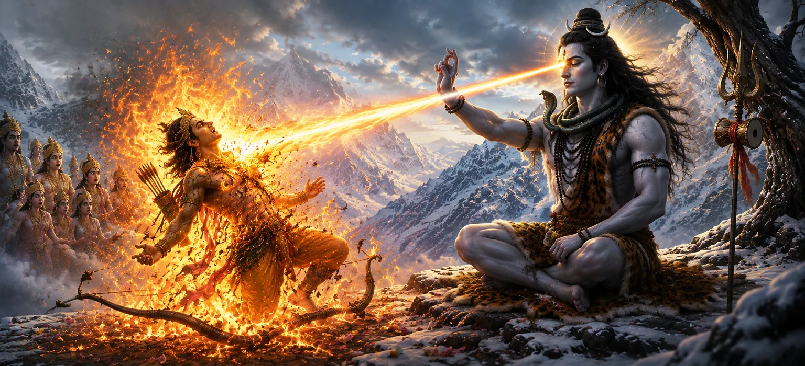

This chapter narrates one of the most dramatic events in the Shiva Purana. As Kāma attempted to disturb Lord Shiva's deep meditation to fulfill the divine plan, Mahadeva opened his third eye in anger. From that blazing eye emerged a powerful fire that instantly reduced Kāma to ashes, revealing the immense power of spiritual discipline and divine consciousness.
Gathering his courage, Kāma released his flower-tipped arrow toward the meditating Lord Shiva. The forces of spring and attraction filled the surroundings as he carried out the mission entrusted to him by the gods.
Lord Shiva perceived the disturbance instantly. Opening his eyes, he understood the source of the interruption. His divine awareness recognized Kāma's action and the attempt to influence his perfectly controlled mind.
Filled with divine intensity, Shiva opened his third eye. This eye symbolized supreme knowledge, spiritual power, and the ability to destroy ignorance and illusion. Its fiery energy was beyond the strength of any worldly force.
The blazing fire from Shiva's third eye instantly consumed Kāma. In a moment, the god of love lost his physical form and was reduced to ashes. The heavens trembled as all witnessed the extraordinary power of Mahadeva.
The devas were astonished by what had happened. Although they had sent Kāma for the welfare of the universe, they now feared the consequences of provoking Lord Shiva's wrath.
Spiritual discipline can overcome even the strongest desires.
The third eye symbolizes higher consciousness and truth.
Divine knowledge destroys attachment and ignorance.
Although the event appeared to be an act of divine anger, it carried a deeper spiritual message. Shiva's action demonstrated the supremacy of spiritual mastery over worldly desire and attachment.
This chapter reminds devotees that true spiritual progress requires mastery over desires. The fire of divine wisdom burns away illusion and attachment, allowing the soul to move closer to ultimate truth.
The burning of Kāma is not merely a story of destruction. It symbolizes the purification of the mind and the transcendence of lower desires through spiritual awakening and self-realization.
Despite the apparent tragedy, the divine plan continued to unfold. The events surrounding Kāma's sacrifice would ultimately contribute to the future union of Shiva and Pārvatī and the defeat of Tārakāsura.
"The fire of divine wisdom burns away every illusion and reveals the eternal truth."
After Kāma's attempt to disturb Lord Shiva's meditation, Mahadeva opens his third eye and reduces the god of love to ashes. Continue to the next chapter to witness the sorrow of Rati, Kāma's devoted wife, as she mourns the loss of her husband and pleads for compassion amid this profound tragedy.